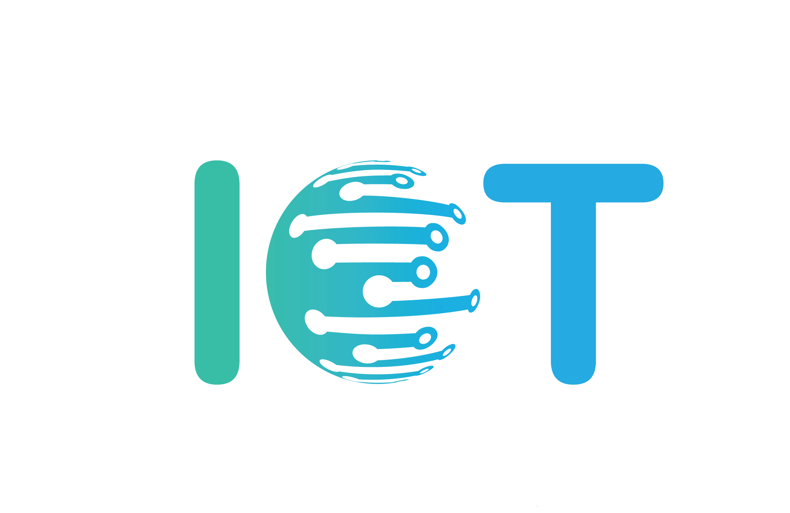

The internet of things (IoT) is a computing concept that describes the idea of everyday physical objects being connected to the internet and being able to identify themselves to other devices. The term is closely identified with RFID as the method of communication, although it also may include other sensor technologies, wireless technologies or QR codes.
The IoT is significant because an object that can represent itself digitally becomes something greater than the object by itself. No longer does the object relate just to its user, but it is now connected to surrounding objects and database data. When many objects act in unison, they are known as having "ambient intelligence."
The internet of things is a difficult concept to define precisely. In fact, there are many different groups that have defined the term, although its initial use has been attributed to Kevin Ashton, an expert on digital innovation. Each definition shares the idea that the first version of the internet was about data created by people, while the next version is about data created by things. In 1999, Ashton said it best in this quote from an article in the RFID Journal:

If we had computers that knew everything there was to know about things – using data they gathered without any help from us – we would be able to track and count everything, and greatly reduce waste, loss and cost. We would know when things needed replacing, repairing or recalling, and whether they were fresh or past their best.
Most people think about being connected in terms of computers, tablets and smartphones. IoT describes a world where just about anything can be connected and communicate in an intelligent fashion. In other words, with the internet of things, the physical world is becoming one big information system.